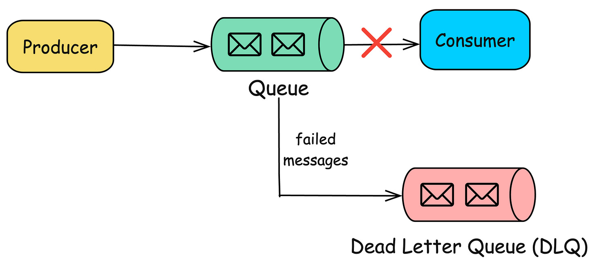
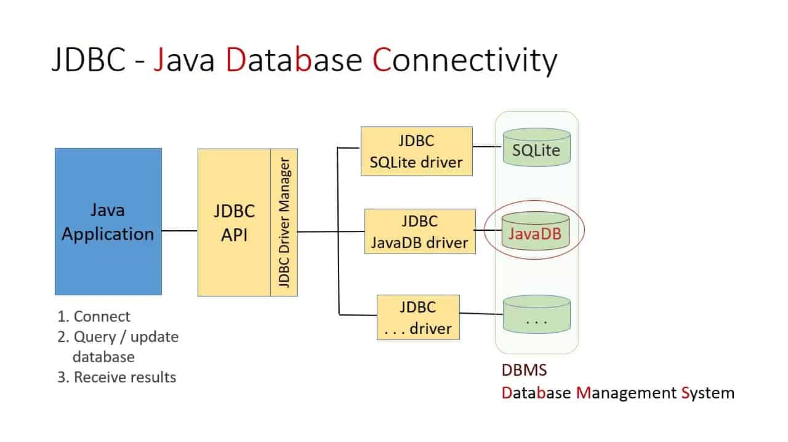
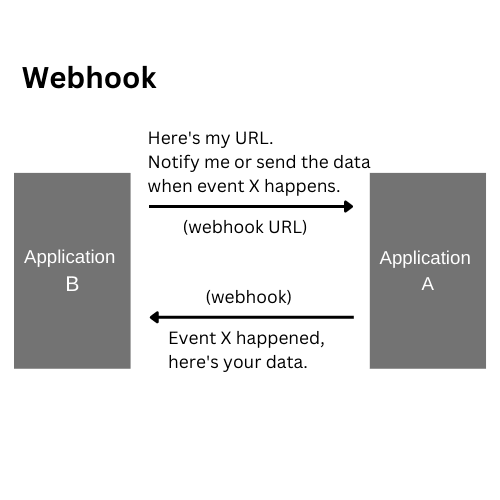

Stream Ingestion
Data Migration Basics
-
Moving data between systems (e.g., SQL Server → Snowflake) is rarely seamless
-
Schema differences almost always exist
-
Best practice:
-
Test with sample data first
-
Validate schema compatibility before full migration
-
Bulk transfer is preferred over row-by-row transfer
-
Use object storage (S3, GCS) as an intermediate layer
-
Biggest challenge is often pipeline migration, not just data movement
-
Use automated tools whenever possible
Example Migrating a user table:
- Source:
VARCHAR(255) - Target:
TEXT - Edge case: encoding differences → corrupted strings if not tested
Streaming Ingestion: Core Challenges
Schema Evolution
-
Event schemas change over time:
-
New fields added
- Fields removed
-
Data types changed
-
Risks:
-
Downstream pipeline failures
- Silent data corruption
Mitigation
- Use schema registry with versioning
- Maintain communication with upstream teams
- Use dead-letter queues for failures
Example IoT event:
{ "temp": 22 }
After firmware update:
{ "temp": 22, "humidity": 60 }
Older consumers may break if not handled
Late-Arriving Data
-
Event time ≠ ingestion time
-
Causes:
-
Network delays
-
Device offline periods
-
Problem:
-
Incorrect analytics if using ingestion time
Solution
- Define cutoff window (e.g., accept events within 10 minutes delay)
Example
- Sensor sends reading at 10:00
- Arrives at 10:05
- Without correction → wrong time-series analysis
Ordering and Multiple Delivery
-
Distributed systems →
-
Messages may arrive out of order
-
Messages may be duplicated
-
Delivery semantics:
-
At-least-once (duplicates possible)
Example
- Payment event processed twice → double charge if not idempotent
Replay
-
Ability to reprocess historical data
-
Supported by systems like Kafka, Kinesis
Use case
- Bug fix → reprocess last 24 hours of events
Time to Live (TTL)
- Defines how long events are retained
Trade-offs:
- Too short → data loss
- Too long → backlog and latency
Examples
- Pub/Sub: up to 7 days
- Kinesis: up to 365 days
- Kafka: configurable (even indefinite)
Message Size Constraints
- Systems limit event size
Examples:
- Kinesis: 1 MB
- Kafka: default 1 MB (configurable higher)
Design implication
- Large payloads → store in object storage, send reference
Error Handling and Dead-Letter Queues
-
Failed events must not block pipeline
-
Solution: Dead-letter queue (DLQ)
-
Store problematic events separately
-
“Good” events → consumer
- “Bad” events → DLQ

Src: blog.algomaster.io
Example
- Invalid JSON → routed to DLQ
- Later fixed and reprocessed
Push vs Pull Consumption
-
Pull:
-
Consumer fetches data (Kafka, Kinesis)
-
Push:
-
System sends data to consumer (Pub/Sub, RabbitMQ)
Trade-off
- Pull = more control
- Push = simpler integration
Location and Latency
- Ingest close to data source → lower latency
Trade-off:
- Cross-region data transfer cost
Example
- IoT data processed in same region vs sent globally
Ways to Ingest Data
Direct Database Connections (JDBC/ODBC)

Src: networkencyclopedia.comKey ideas:
- JDBC → JVM-based portability
- ODBC → OS-dependent drivers
Limitations:
- Poor support for nested data
- Row-based transfer inefficient
Optimization
- Parallel queries (but increases DB load)
Change Data Capture (CDC)
Batch CDC
- Uses timestamps (e.g.,
updated_at)
Limitation:
- Only captures latest state
Example
- Bank account updated 5 times → only final balance captured
Continuous CDC
-
Captures every change as an event
-
Uses database logs
Example
- PostgreSQL WAL → streamed to Kafka
CDC vs Replication
-
Synchronous replication:
-
Strong consistency
-
Used for read replicas
-
Asynchronous CDC:
-
Flexible
- Supports analytics pipelines
APIs as Data Sources
- No standardization → high engineering effort
Trends:
- API client libraries
- Managed connectors
- Data sharing platforms
Advice
- Avoid building connectors from scratch unless necessary
Message Queues vs Streams
-
Message queue:
-
Transient
-
Event disappears after consumption
-
Stream:
-
Persistent log
-
Supports replay
-
As seen in diagram on page 12:
-
Multiple producers → consumers → recombined → new stream
Managed Data Connectors
- Prebuilt connectors (SaaS or OSS)
Capabilities:
- CDC
- Scheduling
- Monitoring
Key idea
- Avoid reinventing ingestion plumbing
Object Storage as Ingestion Layer
- Highly scalable
- Secure
- Supports any file type
Use cases
- Intermediate storage
- Cross-team sharing
File Formats
CSV (Problematic)
- No schema
- Ambiguous delimiters
- No support for nested data
Modern Formats
- Parquet, Avro, ORC, Arrow
Advantages:
- Schema included
- Efficient
- Supports nested data
Example
- JSON stored as nested structure in Parquet
Legacy and Practical Methods
EDI (Email, Flash Drives)
- Still used in real-world systems
Improvement
- Automate ingestion from email → object storage
Shell and CLI
- Used for scripting ingestion workflows
SSH, SCP, SFTP
-
Secure data transfer methods
-
Common in enterprise pipelines
Webhooks (Reverse APIs)

Src: bannerbear.com
-
Data provider sends events
-
Consumer must expose endpoint
-
Webhook → serverless → stream → storage
Challenges:
- Hard to maintain
- Requires robust architecture
Web Scraping
- Extract data from websites
Challenges:
- Legal risks
- Fragile HTML structure
- Maintenance overhead
Large-Scale Data Transfer
-
For 100TB+:
-
Use physical devices (Snowball, Snowmobile)
Insight
- “Truck > Internet” at massive scale
Data Sharing
-
Access data without copying
-
Read-only datasets from providers
Trade-off:
- No ownership
- Access can be revoked
Key Takeaways
-
Ingestion is not just data movement—it impacts:
-
Schema
- Storage
-
Processing
-
Trade-offs exist everywhere:
-
Latency vs cost
-
Flexibility vs complexity
-
Prefer:
-
Managed solutions
- Object storage
-
Streaming systems with replay
-
Always design for:
-
Failures
- Schema changes
- Scalability
References
- Chapter 7 Fundamentals of Data Engineering